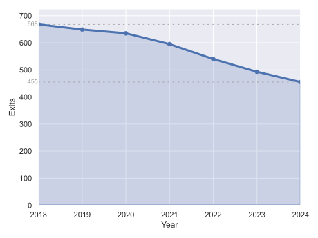

# Prepare datadf_route_ends = dpw_pls.groupby('route_id').tail(1)ct_df = df_route_ends.copy().assign(end_yr=df_route_ends.pl_end_dt.dt.year)ct_df.end_yr = ct_df.end_yr.astype("Int64")ct_df.loc[ ct_df.rt_end_cat.isin(["[Not ended or invalid end reason]", "Missing data/error"]),"rt_end_cat"] ="Missing data/errors"ct_df["Pathway"] = ct_df.svc_type_short.rename( {"Male Only Pathway": "M", "Female Only Pathway": "F","Mixed Pathway": "M/F", "Substance Misuse Pathway": "SU"})# Plot the chartimport seaborn.objects as soplotdata = ( ct_df.groupby("end_yr").size().drop([2017,2025]).to_frame(name="exits") .reset_index() .rename(columns={"end_yr": "x", "exits": "y"}))limits = (plotdata["y"].min(), plotdata["y"].max())p = ( so.Plot(plotdata, x="x", y="y") .label(x="Year", y="Exits") .limit(y=(0, 725), x=(2018, 2024)))limpos =2022.5for lim in limits: p = p.add(so.Line(linestyle=(3,6), color=".6", linewidth=0.8), data=pd.DataFrame({"x": [2018, 2024], "y": [lim] *2}))p = ( p.add(so.Line(linewidth=3)) .add(so.Dot()) .add(so.Area()) .add( so.Text({"clip_on": False}, halign="right", valign="center", fontsize=9, color=".6", offset=1), data=pd.DataFrame({"x": [2018] *2, "y": list(limits), "text": [str(x) for x in limits]}), x="x", y="y", text="text" ))fig_4_4 ="img_output/Figure_4.4.svg"p.save(fig_4_4)pass
Figure 4.4

Notes: Full data table is Table A.2. People can have more than one exit in a year. Moves within or between services and incomplete years (2017 and 2025) are excluded.
Figure 4.5: Exits from BAHSA by calendar year and end reason
Notes: Period covered is 2018-2024, vertical gridlines represent years 2019-2023, as in Figure 4.4. Full data table is Table A.2. 1. ‘Supported’ is moves to support services outside BAHSA.
Table A.2
Code
ta2 = ( pd.crosstab( ct_df.rt_end_cat.rename("Exit reason"), ct_df.end_yr.rename("Year"), normalize=False, margins=True ) .sort_values(by="All", axis=0, ascending=False) .pipe(lambda df: df.reindex(list(df.index.drop("All")) + ["All"])) # Move total back to bottom)years = ta2.columns.values[:-1]days = ([(pd.Timestamp(f"{years[0]+1}-01-01") - distinct_pathways.dpw_start_dt).days] + [(pd.Timestamp(f"{y+1}-01-01") - pd.Timestamp(f"{y}-01-01")).days for y in years[1:-1]] + [(distinct_pathways.dpw_end_dt - pd.Timestamp(f"{years[-1]}-01-01")).days])ta2.columns = pd.MultiIndex.from_arrays([ta2.columns.values, days + [sum(days)]], names=("Year", "Days"))excel_output["Table A.2: Exits from BAHSA per calendar year by end reasons"] = ta2display(ta2)